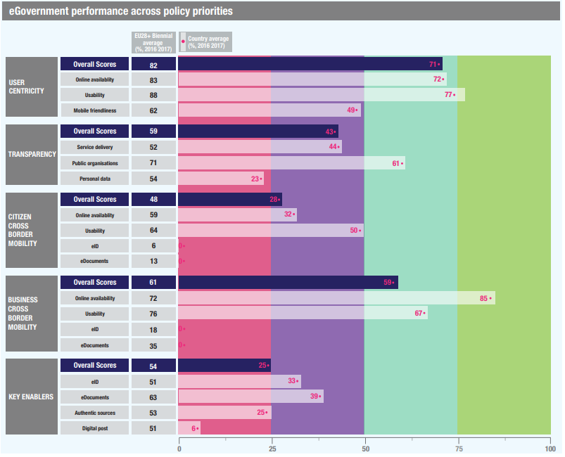

Digital Government Factsheet 2019
Bulgaria
Table of Contents
Digital Government Highlights 6
Digital Government Political Communications 7
Digital Government Legislation 9
Digital Government Governance 15
Digital Government Infrastructure 20
Digital Government Services for Citizens 26
Digital Government Services for Businesses 34
Country Profile
Basic data
Population: 7 050 034 inhabitants (2018)
GDP at market prices: 55 182 million Euros (2018)
GDP per inhabitant in PPS (Purchasing Power Standard EU 28=100): 49 (2017)
GDP growth rate: 3.1% (2018)
Inflation rate: 2.6% (2018)
Unemployment rate: 5.2% (2018)
General government gross debt (Percentage of GDP): 25.6% (2017)
General government deficit/surplus (Percentage of GDP): 1.1% (2017)
Area: 111.000 km²
Capital city: Sofia
Source: Eurostat (last update: 15 March 2019)
Digital Government Indicators
The following graphs present data for the latest Generic Information Society Indicators for Bulgaria compared to the EU average. Statistical indicators in this section reflect those of Eurostat at the time the Edition is being prepared.
Percentage of individuals using the Internet for interacting with public authorities in Bulgaria | Percentage of individuals using the Internet for obtaining information from public authorities in Bulgaria |
Percentage of individuals using the Internet for downloading official forms from public authorities in Bulgaria | Percentage of individuals using the Internet for sending filled forms to public authorities in Bulgaria |
Digital Government State of Play
The graph below is the result of the latest eGovernment Benchmark report, which monitors the development of eGovernment in Europe, based on specific indicators. These indicators are clustered within four main top-level benchmarks:
- User Centricity – indicates the extent to which (information about) a service is provided online and how this is perceived.
- Transparency – indicates the extent to which governments are transparent regarding: i) their own responsibilities and performance, ii) the process of service delivery and iii) personal data involved.
- Cross-Border Mobility – indicates the extent to which EU citizens and businesses can use online services in another country.
- Key Enablers – indicates the extent to which five technical pre-conditions are available online. There are: Identification (eID), Electronic documents (eDocuments), Authoritative Sources, and Digital Post. Digital Post refers to the possibility that governments communicate electronically-only with citizens or entrepreneurs through e.g. personal mailboxes or other digital mail solutions.
These top-level benchmarks are measured using a life-events (e.g. mystery shopping) approach. Eight life events are included in the overall eGovernment performance score. Four of these life events were measured in 2013, 2015 and 2017 and the other four were measured in 2012, 2014, 2016, and again in 2018. The life events measured in 2017 were Regular business operations, Moving, Owning and driving a car and Starting a small claims procedure. The life events measured in 2018 are Business start-up, Losing and finding a job, Family life and Studying.

Source: eGovernment Benchmark Report 2018 Country Factsheets
Digital Government Highlights
Digital Government Political Communications
Digital Government Legislation
- The law amending and supplementing the Public Procurement Act introduced mandatory use of the National Electronic Platform, from the opening of the procedures to the receipt and opening of electronic applications for participation and tenders, as well as for electronic communications in the course of the procurement procedure.
- The Cybersecurity Act was adopted in pursuance of the commitments of the Republic of Bulgaria as a Member State of the European Union to establish an organization for the implementation of the Directive (EU) 2016/1148 concerning measures for a high common level of security of network and information systems across the Union.
Digital Government Governance
No new changes in digital government governance were reported.
Digital Government Infrastructure
For the purposes of cross-border electronic identification, an eIDAS Node was developed and deployed in a production environment in accordance with the requirements of Regulation (EC) No 910/2014.
The Open Data Portal was created. It is a single, central, public web-based information system that provides for the publication and management of information for re-use in an open, machine-readable format along with relevant metadata. The portal was built in a way that allowed for the complete retrieval of published information or parts of it.
In August 2018, the platform for access to public information was launched. It was developed and maintained by the administration of the Council of Ministers. The platform is a unified, central, public web-based information system that electronically provides the entire process of filing and processing of applications for access to information, forwarding to competent bodies where necessary, issuing a decision and publishing the relevant information from those obliged under the Access to Public Information Act while protecting the applicant's personal data under the Personal Data Protection Act.
Digital Government Services for Citizens and Businesses
Digital Government Political Communications
Specific political communications on digital government
Analysis of the current state of play;
Strategic goals;
Sectoral policies for eGovernance;
Activities to achieve the predetermined objectives;
Coordination and management of the strategy implementation;
Model of eGovernance: Information and Technology model.
The strategy was adopted by Decision № 163 of 21.03.2014, the Council of Ministers.
A Roadmap to the Strategy for eGovernment Development was adopted on 5 April 2016 with Decision №274 of Council of Ministers, in order to detail the achievement of the strategic objectives by listing priority projects for implementation.
The strategy has the following targets:
- Target 1: Provision of qualitative, efficient and easily accessible eServices for citizens and business.
- Target 2: Transformation of the administration into digital administration through integration of information processes.
- Target 3: Popularisation, access and participation.
Architecture of eGovernance
Key enablers
Access to public information
No political communication was adopted in this field to date.
eID and Trust Services
No political communication was adopted in this field to date.
Security aspects related to digital government
No political communication was adopted in this field to date.
Interconnection of base registries
No political communication was adopted in this field to date.
eProcurement
No political communication was adopted in this field to date.
Domain-specific political communications
The Governance Programme includes the following relevant digital priorities:
Introduction of a national scheme for eID;
Further development of basic infrastructure and shared resource of eGovernment;
Connection of key registers and provision of interoperability for switching to automated/semi-automated exchange of data and electronic documents;
Provision of network and information security;
Applying the 'digital by default' principle;
Digitalisation of the most commonly used administrative services;
Provision of administrative services related to life events.
Interoperability
To contribute to the development of a service-centred community, where all citizens and enterprises can communicate with the state without having to acquaint themselves with its hierarchical structure and division of roles;
To contribute to greater transparency of information related to political decisions on public information systems;
To support the joint delivery of services in the public sector;
To create conditions for free competition in the development of information and communications technology (ICT) at the administration;
To reduce and optimize public sector IT expenses;
Emerging technologies
No political communication was adopted in this field to date.
Digital Government Legislation
Specific legislation on digital government
eGovernment Act
The eGovernment Act (EGA) entered into force on 13 June 2008 and defined arrangements for the handling of electronic documents by administrative authorities, the provision of administrative services by electronic means and the circulation of electronic documents among various Administrations. Its scope also extended to other entities that carry out public functions and to public service providers.
Under one of the Act’s main provisions, administrative bodies and persons charged with public functions, and organisations providing public services, cannot require citizens and organisations to produce or to prove data which has already been collected or created. Such data must be collected by the aforementioned bodies and persons from the initial data administrator. Another important provision stated that public bodies provide administrative services electronically.
These provisions remained unchanged in the amended version of EGA.
The Electronic Governance Act, amended in June 2016, introduced the new State eGovernment Agency (SEGA) which integrated the Electronic Governance Directorate of the Ministry of Transport, Information Technologies and Communications and the Executive Agency Electronic Communication Networks and Information Systems.
Some of the new articles in the Electronic Government Act integrated mandatory requirements for the preparation of terms of reference. In particular, art. 58a. (new - SG 50/16, in force from 1 July 2016) listed the requirements that administrative authorities must include in the preparation of technical and functional terms of reference for public procurements for development, upgrading or implementation of information systems or electronic services.
Currently, amendment of the eGovernment Act is undergoing legislative review and has not yet been enacted. With this amendment, EU Directives will be transposed in the national legislation.
Establishment of the State eGovernment Agency
The State eGovernment Agency (SEGA) was established under the Council of Ministers as per the provisions of the Electronic Government Act (published in the State Gazette, Issue 50 of 2016). The Agency was established as a separate entity funded by the state budget, with headquarters in the city of Sofia. The Chairperson of the State eGovernment Agency, determined by a Resolution of the Council of Ministers, and appointed by the Prime Minister for a period of 5 years, was designated the primary budget administrator.
The Agency is the successor of the Electronic Government Directorate within the Ministry of Transport, Information Technologies and Communications and the Executive Agency “Electronic Communication Networks and Information Systems”.
The State eGovernment Agency performs activities related to issuing and introducing control-related policies, rules, regulations and good practices in the field of electronic government, strategic planning and initiatives, budget planning and control, coordinating sector-related policies and interdepartmental projects. The Agency also maintains central registers to meet the electronic government requirements and needs, other central registers, a state private cloud and communication network of the State Administration.
The Chairperson of the SEGA carries out the state policy in the following fields:
Electronic Government;
Electronic Certification Services;
Electronic Identification;
Network and Information Security;
Spatial Information Infrastructure;
Public Sector related information in machine-readable open data format.
In carrying out state policy in the fields referred to above, the Agency Chairperson performs the powers conferred on him/her pursuant to the Electronic Government Act (EGA), the Electronic Identification Act (EIA), the Electronic Communications Act (ECA), the Cyber Security Act, and other acts or ordinances of the Council of Ministers.
Decree №274/28.10.16 of the Council of Ministers set up the rules for the functioning of the Agency.
Decree №3/9.01.17 of the Council of Ministers adopted the Ordinance for the common requirements to information systems, registers and electronic administrative services.
Key enablers
Access to public information
Access to Public Information Act
The Access to Public Information Act regulates the public relations connected to the right of access to public information, as well as to the re-use of public sector information.
The Act was voted by Parliament in 2018.
Bulgaria has completed the transposition of Directive 2003/98/EC on the re-use of public sector information with a decree amending the Access to Public Information Act. This amendment came into force in June 2007. In June 2016, Directive 2013/37/EC was transposed. The Act granted all citizens or legal entities the right to access the information held by State institutions, regardless of the medium in which it is held. Information can be withheld if it concerns sensitive details such as personal information, confidential state documents or business matters. Requests can be verbal or written and must be processed within 14 days.
The amendment introduced these measures:
An increase in the number of bodies involved (regional offices of central authorities and bodies financed under EU programmes and funds);
Obligation for the provision of partial access to information;
Obligation for proactive publication of information online;
Public interest test.
Protection of Personal Data Act
The main purpose of the amendments to the Protection of Personal Data Act is to ensure the effective implementation of the European Union's new legal framework on data protection GDPR, namely Regulation (EU) 2016/679 of the European Parliament and of the Council of 27 April 2016 on the protection of individuals with regard to the processing of personal data and on the free movement of such data.
A major change is the introduction of the principle of accountability and the upgrading of requirements for business, public authorities, and to any person who processes personal data. Accountability requires active action on the part of the controller to comply with the principles and rules for the processing of personal data at all stages of its activities and to demonstrate compliance with these rules to the supervisory authority.
The scope of the term "personal data" is expanding: a person’s digital identity (social networking, e-mail, location) and traffic (including GPS coordinates, IP address) are already accepted for personal data.
Particular attention is paid to special (sensitive) categories of personal data - health and mental status, genetic data, beliefs, ideas, racial and ethnic origin, etc. Under certain conditions, the appointment of a Data Protection Officer (DPO) is required.
The rights of data subjects have been expanded, including the "right to be forgotten" upon expiration, retired consent, accomplished primary purpose for which they were collected, etc. In addition, it should be important to consider the transparency of the processing and the associated obligation to provide brief and comprehensible information to the data subjects that are being processed.
eID and Trust Services
Electronic Document and Electronic Trust Services Act
This Act regulated the electronic document and the electronic trust services.
Bulgaria amended the Law on Electronic Document and Electronic Signature in 2017 to:
Create the conditions for a comprehensive cross-border and inter-sector framework for secure, reliable, and easy to use electronic transactions in the internal market.
Create the conditions to develop digital infrastructure to improve the quality of public services, which would facilitate cross-border access to businesses and citizens within the EU and with other leading countries in the field of eGovernment.
Ensure a fruitful European collaboration promoting innovation and the exchange of best practices to the implementation of cross-border services, and synchronisation with European initiatives and programmes relating to eGovernment.
Build trust in the online environment, which is a key factor for economic and social development. A lack of confidence in the online environment discourages citizens and public authorities from carrying out electronic transactions and electronic service delivery.
The amendments to the Law on Electronic Document and Electronic Signature aimed to ensure that national legislation relating to the provision of electronic certification services complied with European legislation and in particular Regulation (EC) № 910/2014 of the European Parliament and the Council from 23 July 2014 on the electronic identification and trust services for electronic transactions in the internal market, repealing Directive 1999/93/EC (Commission Regulation (EU) № 910/2014). In view of the direct applicability of the regulation, it provided for the repeal of provisions relating to elements of the system that are specifically regulated by the act of the European Union.
With the entry into force of the new amendment, a qualified electronic signature has the legal effect of a handwritten signature, while simple and advanced electronic signatures may be recognised as handwritten signatures.
Electronic Identification Act
A new Electronic Identification Act was adopted in May 2016 and came into force on 21 November 2016. In addition, amendments to the law on national identification documents were made. This is a key step for the accelerated introduction of eGovernment as it defines a unified scheme for electronic identification of citizens and businesses.
eSignature in the eGovernment Act
Article 31, Section II of the eGovernment Act regulates the use of the electronic signature for eGovernment application. The Electronic Document and Electronic Trust Services Act regulated the electronic document and the electronic trust services by defining an electronic signature in the meaning of Art. 3, par. 10 of Regulation (EC) No 910/2014; Enhanced electronic signature is an electronic signature within the meaning of Art. 3, par. 11 of the Regulation (EC) No 910/2014; Qualified electronic signature is an electronic signature within the meaning of Art. 3, par. 12 of the same Regulation. In particular, the rules for the obtaining, use, renewal and revocation of electronic signature certificates in administrations are settled in the Ordinance on electronic signature certificates in administrations.
Security aspects related to digital government
The Cybersecurity Act, published in State Gazette No. 94 of 12 November 2018 was adopted in pursuance of the commitments of the Republic of Bulgaria as a Member State of the European Union, which should introduce into its national legislation provisions until 09.05.2018 and establish an organization for the implementation of the Directive (EU) 2016/1148 of the European Parliament and of the Council of 6 July 2016 concerning measures for a high common level of security of network and information systems across the Union (ОВ, L 194 of 19 July 2016).
Law for Protection of Personal Data
Adopted in January 2002 and last amended in May 2018 due to the GDPR, the Law for Protection of Personal Data was modelled on the EU Directive 95/46/EC on the protection of individuals with regard to the processing of personal data and on the free movement of such data. It applied to the protection of individuals with regard to the processing of personal data, granting them the right to access and correct information held about them by public and private bodies. It defined lawful grounds for the collection, storage and processing of the personal data of individuals. Application of the Act was overseen by the Commission for Personal Data Protection, an independent supervisory authority.
Interconnection of base registries
Central component
In Bulgaria, all primary registers are created and maintained on grounds stipulated by law.
Pursuant to the Ordinance on the general requirements for information systems, registers and electronic administrative services adopted in 2017, access to registers can be done directly, or through a central component that ensures compliance with the interoperability and data exchange requirements, and that meets the requirements, determined by the Chairperson of the State eGovernment Agency. The central component, including the rights to access resources through it, is managed by the Chairperson of the State eGovernment Agency
Law on Commercial Register and Register of Non-profit Legal Entities
This Act regulates the registration, keeping, storage and the access to the Commercial Register and Register of Non-profit Legal Entities, as well as the effect of the entries, deletions and the announcements in them.
The Act also identifies the data owner as well as the ways to ensure security, interoperability and free access to data. The Commercial Register and Register of Non-profit Legal Entities register is a unified electronic database containing the entered circumstances and acts disclosed by law concerning companies and branches of foreign companies, the non-profit legal entities and the branches of foreign non-profit legal entities.
Cadastre and Property Registry Act
The Cadastre and Property Registry Act provides a definition of how a cadastre and property is understood in the Bulgarian context, and regulates the organisation, financing, development, maintenance and the use of the registries. Additionally, the Act recognises and defines the difference between the Cadastre and the Land Registry: the “cadastre is the set of basic data on the location, boundaries and dimensions of real estate in Bulgaria”, while the “land registry consists of the batches of real estate,” which allow for establishing, transferring, amending or terminating any real rights on real estate.
Civil Registration Act
The Civil Registry Act regulates and defines the purpose of the civil registration, contains reference data indicating the subject of the entries, as well as the events that led to the entry in the civil registration. The main events in this case are birth, marriage, and death. In addition, the most important basic data entered in the civil register refer to the name, date and place of birth, gender, citizenship and the unified citizen number that is provided to Bulgarians and residents.
Register BULSTAT
BULSTAT is the Unified Register for Identification of Economic and Other Subjects. The Law on the BULSTAT register of 27 April 2005, and the ensuing adoption of a Government strategy for the actual establishment of a central register of legal entities, and of an electronic register of Bulgaria, were aimed to unify the registration of businesses with the Registry Agency under the Ministry of Justice. This was done to turn business registration from a court procedure into a purely administrative one, introducing a single BULSTAT number for tax and social security purposes. The Law on Statistics requires the National Statistical Institute (NSI) to establish and maintain BULSTAT as a national register.
eProcurement
In April 2016, a new Law on Public Procurement in Bulgaria entered into force. The law contained regulations covering the different sub-phases of eProcurement, such as: eNotification, eTendering, eAuctions and the Dynamic Purchasing System.
It fully complies with Directive 2014/24/EC of the European Parliament and the Council on Public Procurement.
The latest amendment of the Public Procurement Act entered into force on 1 March 2019 and was published in the State Gazette No. 86 of 18 October 2018. From 1 November 2019, the provisions introduced the mandatory use of the National Electronic Platform from the opening of the procedures to the receipt and opening of electronic applications for participation and tenders, as well as for the electronic communication in the course of the procurement procedure, will come into force. By that date, trainings, testing and registration of users in the Platform will be carried out in order to smoothly changeover to eProcurement. The implementation of the Platform will take place in two stages. It will be fully completed with all functionalities by the end of 2020. The rules on the introduction of all of the Platform's functionalities will start to apply from 1 January 2021.
eInvoicing legislation
Amendments to the Public Procurement Act are also related to electronic invoices. In the case of payments under public procurement contracts, contracting authorities are obliged to accept and process electronic invoices provided their content meets the requirements of the Value Added Tax Act. Invoices must comply with the European electronic invoicing standard approved by Commission Implementing Decision (EU) 2017/1870 of 16 October 2017 on the publication of the reference of the European standard on electronic invoicing and the list of its syntaxes pursuant to Directive 2014/55/EU of the European Parliament and of the Council or an equivalent standard with which it is implemented.
Domain-specific legislation
eCommerce Act
The eCommerce Act was enacted in Parliament in December 2006 to implement the EU Directive on electronic commerce (2000/31/EC). It regulated the obligations of service providers with regard to contracts by means of eDevices, and stipulated the rules limiting the service providers’ responsibilities as to the provision of access and transfer of information services. It introduced a definition of ‘SPAM’, as well as the development of a specialised registry of people who do not wish to receive such messages. It was last updated in 2018.
Interoperability
eGovernment Act
The eGovernment Act and its existing regulatory framework set the requirement for the provision of internal electronic administrative services and the exchange of electronic documents between administrative authorities under the conditions of interoperability as well as the requirement of uniform standards and rules and semantic interoperability. These requirements for the provision of internal electronic administrative services also applied to public service providers and to public service organizations unless otherwise provided by law. The Chairperson of the SEGA shall ensure the integration of the information systems of the administrative bodies with those of the Member States of the European Union to enable the provision of cross-border electronic administrative services.
Emerging technologies
No legislation was adopted in this field to date.
Digital Government Governance
National
Policy
State eGovernment Agency (SEGA)
The State eGovernment Agency (SEGA) with the Council of Ministers was established pursuant to the Electronic Government Act (published in the State Gazette, Issue 50 of 2016). The Agency was established as an independent entity funded by the state budget and with its headquarters in Sofia. The Chairperson of the State eGovernment Agency, determined by a Resolution of the Council of Ministers and appointed by the Prime Minister for a period of 5 years, is the primary budget administrator. The Agency is a successor of the “Electronic Government” Directorate with the Ministry of Transport, Information Technologies and Communications and the Executive Agency “Electronic Communication Networks and Information Systems”.
SEGA performs activities related to issuing and introducing control-related policies, rules, regulations and good practices in the field of electronic government, strategic planning and initiatives, budget planning and control, coordinating sector-related policies and interdepartmental projects. The Agency also maintains central registers to meet the electronic government requirements and needs, other central registers as well as a private cloud and communication network of the State Administration.
Atanas Temelkov Chairperson of State eGovernment Agency Contact details: State eGovernment Agency 6, Gurko str. 1000 Sofia Bulgaria E-mail: mail@e-gov.bg Tel.: +359 2 949 21 15 Source: https://e-gov.bg |
| Alexander Yolovski Deputy Chairperson of State eGovernment Agency Contact details: State eGovernment Agency 6, Gurko str. 1000 Sofia Bulgaria E-mail: ayolovski@e-gov.bg Tel.: +359 2 949 24 68 Source: https://e-gov.bg |

Krasimir Simonski Deputy Chairperson of State eGovernment Agency Contact details: State eGovernment Agency 6, Gurko str. 1000 Sofia Bulgaria E-mail: ksimonski@e-gov.bg Tel.: +359 2 949 21 24 Source: https://e-gov.bg |
Ministry of Transport, Information Technology and Communications (MTITC)
The MTITC, through the Information Technologies Directorate, has competences for activities related to free flow of data, data economy, and information society.
Rossen Jeliazkov Minister of Transport, Information Technology and Communications Contact details: Ministry of Transport, Information Technology and Communications 9, Dyakon Ignatiy str. 1000 Sofia Bulgaria E-mail: mail@mtitc.government.bg Tel.: +359 2 940 97 71 Source: http://www.mtitc.government.bg/ |
Dimitar Genovski Deputy Minister of Transport, Information Technology and Communications Contact details: Ministry of Transport, Information Technology and Communications 9, Dyakon Ignatiy str. 1000 Sofia Bulgaria E-mail: mail@mtitc.government.bg Tel.: +359 2 940 97 71 Source: http://www.mtitc.government.bg/ |
Coordination
Ministry of Transport, Information Technology and Communications (MTITC)
The MTITC, through the Information Technologies Directorate, has competences for activities related to the free flow of data, data economy, and information society.
Council for Administrative Reform
The Council for Administrative Reform coordinates the implementation of general and sectorial strategies in the field of eGovernment. For this purpose, it established the permanent working group ‘Electronic Governance’, which includes a coordinating function.
State eGovernment Agency (SEGA)
The State eGovernment Agency performs activities related to issuing and introducing control-related policies, rules, regulations and good practices in the field of electronic governance, strategic planning and initiatives, budget planning and control, coordinating sector-related policies and interdepartmental projects. The Agency also maintains central registers to meet the electronic governance requirements and needs, other central registers, a private cloud and communication network of the State Administration.
Council for eGovernment
Until 2016, the Council for eGovernment assisted Ministers in the implementation of eGovernment policy, coordinates draft sectoral eGovernment strategies and/or programmes for their implementation in the context of the overall strategy for eGovernment, and coordinated programme budgets and the proposals for updating the overall strategy for eGovernment development.
A new Electronic Governance Council, an advisory body to the SEGA, was formed in 2017, and changes were made to its functions and composition.
Implementation
Government ministries and bodies
Government ministries and bodies are responsible for the implementation of departmental eGovernment projects falling within their respective areas of competence.
State eGovernment Agency (SEGA)
The State eGovernment Agency performs activities related to issuing and introducing control-related policies, rules, regulations and good practices in the field of electronic government, strategic planning and initiatives, budget planning and control, coordinating sector-related policies and interdepartmental projects. The Agency also maintains central registers to meet the electronic government requirements and needs, other central registers, a state private cloud and communication network of the State Administration.
Private sector entities
The implementation of several eGovernment projects is undertaken by private sector entities through tendering procedures.
Support
State eGovernment Agency (SEGA)
SEGA supports the administrative units engaged in the implementation of IT and communication technologies by providing guidelines. It also supports the development of IT with regard to the effective interaction among the various administrative structures and the development of digital content in accordance with the eGovernment Act.
SEGA also provides consultation to institutions regarding the development and implementation of national strategies in the ICT field.
National Computer Security Incidents Response Team (CERT)
Private sector entities
Several support services are undertaken by private sector entities through tendering procedures.
Base registry coordination
Central Coordination
The administration of the specific base registries takes place at the national level through their respective ministries/authorities. Coordination and sharing activities between base registries are concluded both at central level as well as decentralised levels. For some registries, data is gathered through local offices and forwarded to the national registries. This is evident for the Civil Registry, where data is gathered and administered through local municipal offices.
Audit
State eGovernment Agency
According to the Electronic Governance Act, the SEGA has functions for verifying compliance, establishing the compliance of the information systems implemented by the administrative bodies with the established regulatory requirements for interoperability, and the mandatory requirements for the preparation of assignments. The law empowers the Agency Chair to create and maintain an information system for preliminary, ongoing and ex-post control as appropriate in the field of eGovernment and the use of information and communication technologies in the activity of the administrative bodies and their administrations. Within the budgetary process, all administrative bodies are required to get conformity in advance with the Chairperson of the Agency on the costs for eGovernment and information and communication technologies.
Data Protection
Commission for Personal Data Protection
The Commission for Personal Data Protection is an independent State body responsible for supervising the observance of the Law for Protection of Personal Data, protecting individuals with regard to processing their personal data while also providing access to this data.
Subnational (federal, regional and local)
Policy
State eGovernment Agency (SEGA)
SEGA has controlling and analytical functions to the investment programmes concerning the Single Electronic Communication Network (UECN) of the state administration.
Coordination
Implementation
Regions and municipalities are involved in the implementation of various eGovernment activities of local interest.
Support
No responsible organisations were reported to date.
Base registry coordination
Local Office coordination
Coordination and sharing activities between base registries are concluded both at central level as well as decentralised levels. For some registries, data is gathered through local offices and forwarded to the national registries. This is evident for the Civil Registry, where data is gathered and administered through local municipal offices.
Audit
Data Protection
No responsible organisations were reported to date.
Digital Government Infrastructure
Portals
The open data portal represents a central, public, web-based database where institutions publish the information collected by them in a for that is, convenient for analysis. It allows easy processing, display map, diagram, or in an otherwise different and more understandable form. The information is in machine-readable format with the necessary metadata.
The Open Data Portal was created and maintained under Art. 15d of the Access to Public Information Act. It is a single, central, public web-based information system that provides for the publication and management of information for re-use in an open, machine-readable format along with relevant metadata. The portal is built in a way that allows the complete retrieval of published information or parts of it.
The portal collects at one place all information and is clear accessible to the public. This is the first step for the easier connections between various facts and the examination of the reasons behind them.
The basis of the project is an open source platform CKAN, which is developed by the Open Knowledge Foundation and Germany. It is used extensively by countries such as Britain, Romania, Slovakia, the Netherlands, Austria, Italy, Sweden, South Korea, including the European Commission and numerous regional administrations.
Public consultations portal
Interoperability of information systems portal
Platform for access to public information
In August 2018, a platform for access to public information was launched. It was developed and maintained by the administration of the Council of Ministers under Art. 15c, para. 1 of the Access to Public Information Act (APIA). The platform is a unified, central, public web-based information system that electronically provides the entire process of filing and processing of applications for access to information. It forwarded to competent bodies the relevant information according to the Access to Public Information Act, while at the same time protecting the applicant's personal data under the Personal Data Protection Act.
UPAEAS
The unified portal for access to electronic administrative services (UPAEAS) - constitutes an entry point to the services delivered by electronic administrative service providers. The portal contains the following inventory:
Component for Multiple Use of Input Data - CMUID;
System for monitoring progress indicators of e-Governance at the national and EU level;
Internal portal for questions related to e-Governance, complete with news, useful links, documents, forums and other techniques for cooperative work;
Software component for implementation into websites for two-way communication;
A centralised system for ensuring decision-making with the participation of citizens and businesses, in accordance with the democratic principles, which is integrated in the administrations;
Software system for managing changes and controlling risk in the transition to eGovernment conditioned work.
Networks
Unified communications network
The Government adopted a plan for the technological, administrative and financial integration of the Electronic Communications Network and the National Network of Public Administration. Both constitute the backbone for the implementation of the provisions for digital transmission needs of public institutions as a unified communications network. Responsibility for the management of the merged network resides with the State eGovernment Agency (SEGA).
The Public Administration, by building a unified communications network, sees an opportunity to effectively reduce the cost of central and local executive authorities for telecommunications services and operational costs. This will facilitate the transfer of funds for the development, maintenance and operation of infrastructure.
The Government aims to create a single, public communication and information infrastructure that will enable the country to: introduce eGovernment; apply video surveillance in public places, intersections, important buildings and schools; provide eLearning, eAgriculture, eCommerce, eHealth, eTourism and eInclusion to disadvantaged people.
The decision to build a national Unified Electronic Communications Network (EESM) was adopted on 10 December 2006. EESM is built on two levels - the backbone network (Backbone) and Access Networks (Metromrezhi).
In August 2003, the backbone of the communication system of the Public Administration was the National Network of the Public Administration (NAMDA). At that time, it comprised 27 regional networks of the Public Administration based on regional cities.
NAMDA was planned to be merged with MPD, the data network of the Ministry of Finance, and connected to the EU’s TESTA II private IP-based network.
The NAMDA and ESM networks were united under the unified Single Electronic Communication Network in 2011. The maintenance for it is under the competences of the State eGovernment Agency, Directorate “Information and Communications Infrastructure”.
Data Exchange
Registry Information Exchange System (RegiX)
By Decision No. 338 of 23 June 2017, the Council of Ministers took measures to reduce the administrative burden on citizens and businesses by removing the requirement to submit certain official documentary evidence in paper form. For issuing certificates, administrations make queries from registers, and the data is retrieved by the administrations electronically. The provision of these services is achieved via the Registry Information Exchange System (RegiX). It is an environment for automated interconnections between registries. With RegiX it is possible for the authorised users of information to automatically retrieve data from basic registers such as the National Population Database, BULSTAT Register, Property Register, Commercial Register and other. The environment is managed by the SEGA
Electronic Information System for Civil Registration and Administration (CRAS)
A system operated by the Directorate General for Citizens’ Registration of the Ministry of Regional Development and Public Works, the Electronic Information System for Civil Registration and Administration (CRAS) offers services related to citizens' personal IDs, submission of data to statistical offices and generalised data related to the number of citizens residing in a given region, city or municipality.
eDelivery
The eDelivery system allows sending, receiving and storing electronic documents for/from public authorities, citizens and legal entities. The eDelivery is an electronic equivalent of the registered mail with a return receipt and is provided in accordance with art. 43 of the Regulation (ЕС) № 910/2014 and art. 26, para.2 and 4 of EGA.
All administrative authorities can integrate the eDelivery module into their information systems or use it via a user interface.
With Decision No 357 of 29 June 2017, the Council of Ministers obliged the administrative authorities to bring their electronic document exchange systems in accordance with a uniform technical protocol approved by the Chairperson of the State eGovernment Agency. Since 1 November 2018, all administrations are obliged to exchange documents only by electronic means.
eID and Trust Services
eSignature
The electronic signature certificate enables several eServices, including: online payment of duties and taxes; customs and tax declarations filing; access to commercial registers; eCommerce; authorised access to confidential information; and electronic signing of documents/contracts. Furthermore, it reduces expenses and time during communication with governmental bodies.
Electronic identification (eID) cards
In 2013 a project of the Ministry of Transport, Information Technologies and Communications issued 5,000 pilot electronic identity cards to political figures, civil servants, journalists and representatives of the private ICT sector.
eProcurement
Public Procurement Register (PPR)
eSender service
Tendering procedures above a certain threshold are published in the Official Journal of the European Union (OJ). The Public Procurement Agency (PPA) provides the free eSender service for contracting authorities which enables the automatic forwarding of relevant tenders to the OJ. It offers a centralised electronic service through which tenders may be submitted for all publications, thus eliminating the need to submit the same notice several times.
Small Scale Electronic Procurement System
The ‘Small Scale Electronic Procurement System’ provides the opportunity to publish notices about small value public contracts on the Public Procurement Agency (PPA) portal. This eService, which is only available to contracting authorities/entities that have an authorised procurement agent (APA) in the Public Procurement Register (PPR), allows users to see the full list of announcements and perform a search according to various criteria.
eInvoicing
eInvoicing platform
ePayment
Electronic Payment Gateway
Since 2018, an electronic payment environment has been in place for electronic administrative service providers. Access to it is via the Electronic Payment Gateway.
The electronic payment environment records electronic payments related to the provision of electronic administrative services, creates electronic payment documents and provides for the possibility of paying them in a way chosen by consumers.
Knowledge Management
Under the Electronic Governance Act, the administrative authorities use a public repository for the development, upgrading or deployment of information systems or electronic services and a control system for the source code and technical documentation versions. The storage for projects or parts of projects designed for custom-made administration is stored on GitHub. Access to the GitHub repository is ensured upon submission of an electronically signed application form to the SEGA by the administrative authority.
Portal for public consultations
VAT Public Bulletin
Cross-border platforms
eIDAS Node
For the purposes of cross-border electronic identification, an eIDAS Node has been developed and deployed in a production environment in accordance with the requirements of Regulation (EC) No 910/2014.
The technical specifications provided by the European Commission have been reused for its development.
Currently the Node is in conformance testing with the technical specifications (by testing tools of the European Commission) and phase by phase is being connected and tested with the Nodes of the other Member States. On a national level the eIDAS Node is completely integrated with the e-Authentication system, developed and maintained by the State eGovernment Agency.
Base registries
RegiX
Digital Government Services for Citizens
The information in this section presents an overview of the basic public services provided to the citizens. These were identified taking inspiration from Your Europe, a website which aims to help citizens do things in other European countries – avoiding unnecessary inconvenience and red tape in regard to moving, living, studying, working, shopping or simply travelling abroad. However, the categories used in this factsheet aim to collect a broader range of information, focusing therefore not only on cross-border services, but also on national services.
The groups of services for citizens are as follows:
- Travel
- Work and retirement
- Vehicles
- Residence formalities
- Education and youth
- Health
- Family
- Consumers
Travel
Documents you need for travel in Europe | |
Passport | |
Responsibility: | Central Government, Ministry of the Interior, District Police Stations (Identity Documents and Passport Regime Units) |
Website: | |
Description: | Online information on how to start the process of obtaining an ID card or passport. Online services include verifying whether the document was issued but not received and to validate personal documents. |
Work and retirement
Working abroad, finding a job abroad, retiring abroad | |
Job search services by labour offices | |
Responsibility: | Central Government, Ministry of Labour and Social Policy, National Employment Agency |
Website: | |
Description: | Registered job seekers receive an online job listing match based on their profile while employers receive a list of matching CVs from job seekers. |
Professional qualifications | |
Legal information system (incl. information on the regulated professions) | |
Responsibility: | Netinfo |
Website: | http://lex.bg/; http://nacid.bg/sites/qual/index.php?id=21 |
Description: | The website allows users to search through enacted legislation, as well as gain useful information regarding citizens’ rights, including work related. Users from the EU, Iceland, Lichtenstein, Norway, or Switzerland wishing to pursue a regulated profession in Bulgaria must select a profession that is on the list. In this way he/she will the correct information to make the right decisions concerning their professional recognition. |
Unemployment and benefits | |
Unemployment benefits | |
Responsibility: | Central Government, Ministry of Labour and Social Policy, National Employment Agency |
Website: | |
Description: | The National Employment Agency provides those registered at the Labour Office Directorates with unemployment benefits in accordance with the Social Security Codex. Online registration and information are available. |
Taxes | |
Income taxes: declaration, notification of assessment | |
Responsibility: | Central Government, Ministry of Finance, National Revenue Agency |
Website: | |
Description: | Online information and forms can be downloaded, submitted and signed electronically, allowing for the online submission of personal income taxes. |
Vehicles
Driving licence | |
Driver’s licence | |
Responsibility: | Central Government, Ministry of the Interior |
Website: | http://www.mvr.bg/; https://e-services.mfa.bg/ |
Description: | Through the eGovernment system of the Ministry of Foreign Affairs, Bulgarian citizens who live abroad and who want to renew their personal documents can submit an electronic application, pay for this service electronically and receive the documents in a consulate, under the delivery conditions they have chosen (diplomatic mail or fast delivery by courier service). This system saves time and money for one trip to the consular office for filing an application. |
Registration | |
Car registration (new, used, imported cars) | |
Responsibility: | Central Government, Ministry of the Interior, Ministry of Transport, Information Technology and Communications, Executive Agency for Automobile Administration (supervision and conformance control) |
Website: | |
Description: | General information on how to obtain a new licence and how to register a car is provided online by the Ministry of Transport, Information Technology and Communications' Executive Agency for Automobile Administration. |
Residence formalities
Documents and formalities | |
Announcement of moving (change of address) | |
Responsibility: | Central Government, Ministry of Regional Development and Public Works, Directorate General for Citizen Registration |
Website: | http://www.mrrb.government.bg/; http://www.grao.government.bg |
Description: | The change of address notification service is available. |
Certificates (birth, marriage): request and delivery | |
Responsibility: | Central Government, Ministry of Regional Development and Public Works, Directorate General for Citizen Registration |
Website: | http://www.mrrb.government.bg/; http://www.grao.government.bg |
Description: | The management and control of the functioning and development of the Citizen Registration System (ESGRAON) are assigned to the Directorate General for Citizen Registration of the Ministry of Regional Development and Public Works and to the 28 ‘Citizen Registration’ Territorial Units located in the former administrative centres of the districts. Online information is available. |
Housing (building and housing, cartography) | |
Responsibility: | Geodesy, cartography and cadastre agency |
Website: | |
Description: | The website of the Bulgarian Geodesy, cartography and cadastre agency allows users to access electronic services. In the Requests page, electronic applications are filed regarding the services of the office of geodesy, cartography, cadastre and Geocardfond. Requests are handled by AGKK employees, in the statutory deadline, where the result is received electronically or at a counter depending on the final document. Real time references, which are automatically generated by the system, are implemented in the REFERENCES page. |
Waste | |
Responsibility: | Ministry of Environment and Water |
Website: | |
Description: | The website provides different sample applications related to waste related activities, as well as information on the waste management for household waste. |
Elections abroad | |
Participation in Bulgarian elections | |
Responsibility: | Central elections committee |
Website: | |
Description: | Bulgarian voters residing abroad can vote in elections, depending on the type of elections. With each election campaign, the information about voting abroad, as well as voting points, is published on the website. |
Education and youth
School and university | |
Enrolment in higher education/university | |
Responsibility: | Central Government, Ministry of Education and Science |
Website: | |
Description: | Information is available online at the portal of the Ministry of Education and Science. |
Public libraries (availability of catalogues, search tools) | |
Responsibility: | Central Government, Ministry of Culture |
Website: | |
Description: | The St. Cyril and Methodius National Library provides an electronic catalogue. More advanced online facilities are offered by university libraries, such as the Sofia University Library. |
Student grants | |
Responsibility: | Central Government, Ministry of Education and Science |
Website: | |
Description: | Information is available online at the portal of the Ministry of Education and Science. |
Traineeships and volunteering | |
Career beginning | |
Responsibility: | Ministry of Labour and Social Policy |
Website: | http://www.az.government.bg/pages/programa-start-na-karierata/ |
Description: | The main objective of the programme is to provide opportunities to acquire work experience for unemployed young people who have completed secondary or higher education in order to facilitate the transition between education and employment. |
Volunteering | |
Responsibility: | Bulgarian Centre for Not-for-Profit Law (BCNL) |
Website: | |
Description: | The website represents a volunteering platform, and information can be found online of BCNL. The centre was founded in July 2001 and is incorporated as a public-benefit foundation in the Central Register at the Ministry of Justice. |
Researchers | |
Funding support | |
Responsibility: | Fund Scientific Research |
Website: | |
Description: | Fund Scientific Research (NSF) aims to support projects and activities to promote research consistent with the ratified Framework Programmes with specific priorities of the European Union, as well as the "Strategy for Development of Science in Bulgaria" to 2020. |
Information and assistance to researchers | |
Responsibility: | EURAXESS Bulgaria |
Website: | |
Description: | EURAXESS Bulgaria provides information and assistance to mobile researchers – by means of the web portal and with the support of our national EURAXESS Service Centres. The portal contains practical information concerning professional and daily life, as well as information on job and funding opportunities. |
Health
Healthcare | |
Health insurance status | |
Responsibility: | National Revenue Agency |
Website: | |
Description: | The website allows for online verification of health insurance status, health insurance calculator, information for persons registered for VAT, and persons authorised to implement a system of cash accounting VAT, as well for making electronic payments to the budget. |
Health-related services | |
Responsibility: | Central Government, Ministry of Health |
Website: | |
Description: | Online information. |
Medical costs (reimbursement or direct settlement) | |
Responsibility: | Central Government, National Social Security Institute |
Website: | http://www.noi.bg/en/index.html ; http://www.en.nhif.bg/ |
Description: | The National Social Security Institute administers the mandatory insurance programmes for disability, old age and survivors' benefits, sickness and maternity, work injuries and occupational diseases, as well as collection, control and information services for all obligatory contributions. |
When living abroad | |
Healthcare abroad I | |
Responsibility: | National Health Insurance Fund, Ministry of Health |
Website: | |
Description: | The European Health Insurance Card (EHIC) is used to claim health insurance entitlements. It is also for users who are temporarily outside Bulgaria (e.g. while on holiday or on a business trip) in EU states, the countries of the EEA or Switzerland. Bulgarian residents using an EHIC card when out of the country must make sure that their insurance is valid. The website gives instructions on how to request the card by filling in a template. |
Healthcare abroad II | |
Responsibility: | Ministry of Health |
Website: | |
Description: | The website provides information for citizens which would like to be treated abroad. |
Family
Children and Couples | |
Certificates (birth, marriage): request and delivery | |
Responsibility: | Central Government, Ministry of Regional Development and Public Works, Directorate General for Citizen Registration |
Website: | http://www.mrrb.government.bg/; http://www.grao.government.bg |
Description: | Management and control of the functioning and development of the Citizen Registration System (ESGRAON) are assigned to the Directorate General for Citizen Registration of the Ministry of Regional Development and Public Works and to the 28 ‘Citizen Registration’ Territorial Units located in the former administrative centres of the districts. Online information is available. |
Child allowances | |
Responsibility: | Central Government, Ministry of Labour and Social Policy, National Employment Agency |
Website: | |
Description: | The National Employment Agency provides those registered at the Labour Office Directorates with family benefits for children in accordance with the Family Assistance for Children Act. Online registration and information are available. |
Consumers
Shopping and unfair treatment | |
Consumer protection | |
Responsibility: | Commission for Consumer Protection |
Website: | |
Description: | The portal provides information on consumer rights and a register of dangerous goods, and also allows for the online submission of complaints/signals. |
Consumer protection (cross-border) | |
Responsibility: | ECC-Net Bulgaria |
Website: | |
Description: | The European Consumer Centre belongs to the European Consumer Centre Network-ECC Net, founded by the European Commission in 28 Member States in collaboration with National Governments. It informs consumers on their rights and assists them in their cross-border consumption issues. It promotes and supports out-of-court dispute resolutions more quickly and at a lower cost than the usual court claim procedures. |
Internet and telecoms | |
Cybercrime | |
Responsibility: | Central Government, Ministry of the Interior |
Website: | |
Description: | The website allows for reporting crimes on the Internet. |
Consumer dispute resolution | |
Alternative dispute resolution | |
Responsibility: | Ministry of Economy; Comission for Consumer Protection and European Consumer Center - Bulgaria |
Website: | |
Description: | A list of all Alternative Dispute Resolution Bodies notified by Member States is available on the European Commission's Online Dispute Resolution Platform. The European Consumer Centre is a contact point for Bulgaria within the online dispute resolution contact points network and helps consumers to access the relevant competent alternative dispute resolution authority in another Member State in the event of cross-border dispute, with obligations arising from sales contracts or provision of services. |
Digital Government Services for Businesses
The information in this section presents an overview of the basic public services provided to the Businesses. These were identified taking inspiration from Your Europe, a website which aims to help citizens do things in other European countries – avoiding unnecessary inconvenience and red tape in regard to moving, living, studying, working, shopping or simply travelling abroad. However, the categories used in this factsheet aim to collect a broader range of information, focusing therefore not only on cross-border services, but also on national services.
The groups of services for businesses are as follows:
Running a business
Taxation
Selling in the EU
Human Resources
Product requirements
Financing and Funding
Dealing with Customers
Running a business
Intellectual property | |
Patents | |
Responsibility: | Patent office of Republic of Bulgaria |
Website: | |
Description: | The website gives information on multiple services regarding patents (only in Bulgarian). It provides sample templates and information for paid services. |
Electronic Signature Certificate for Businesses | |
Responsibility: | Communications Regulation Commission |
Website: | |
Description: | The website gives information on registered providers of certified services in Bulgaria, from whom electronic signature certificate can be requested. |
Start-ups, Developing a business | |
Registration of a new company | |
Responsibility: | Central Government, Ministry of Justice, Registry Agency |
Website: | |
Description: | An online commercial register enables the establishment and re- organisation, restructuring and liquidation of a business. Applications in paper form still apply, especially for businesses that do not possess an eSignature certificate. An option to pay electronically is provided. It is necessary to own an electronic signature. |
Taxation
Excise duties, VAT and business tax | |
Corporate tax: declaration, notification | |
Responsibility: | Central Government, Ministry of Finance, National Revenue Agency |
Website: | |
Description: | Online information and forms can be downloaded, submitted and signed electronically, allowing for the online submission of corporate taxes. |
VAT: declaration, notification | |
Responsibility: | Central Government, Ministry of Finance, National Revenue Agency |
Website: | |
Description: | Online information and forms can be downloaded, submitted and signed electronically, allowing for the online submission of VAT declarations. |
Electronic Payments | |
Responsibility: | National Revenue Agency |
Website: | |
Description: | The website allows for electronic payments of different type of taxes. |
Customs declarations (e-Customs) | |
Responsibility: | Central Government, Ministry of Finance, National Customs Agency |
Website: | |
Description: | There are model forms to download, complete and submit. |
Selling in the EU
Public contracts | |
Public procurement / eProcurement | |
Responsibility: | Central Government, Ministry of Finance, Public Procurement Agency, Small Scale Public Procurement Electronic Market |
Website: | http://www.aop.bg/; http://dv.parliament.bg/; http://minfin.bg/ |
Description: | Contracting authorities in Bulgaria are obliged to publish their tender notices in the Bulgarian State Gazette, as well as in the web-based Public Procurement Register (PPR). |
Selling goods and services | |
Bulgarian law | |
Responsibility: | Netinfo; Point of Single Contact for Service Providers |
Website: | |
Description: | The website allows users to search through adopted laws, as well as provides useful information on different topics, such as businesses and consumers. The main task of Point of Single Contact (PSC) is to help entrepreneurs in the field of provision of services by facilitating the process of starting a business. Through PSC, the service providers can obtain all necessary information and complete electronically all administrative procedures required to start and exercise the activity of provision of services. The PSCs are accessible to all service providers whether established on national territory or on the territory of another Member State. Through the PSC the entrepreneurs in the field of provision of services will reduce significantly their time and costs for starting a business across Europe. The PSC Portal in Bulgaria is on the National e-government portal. The PSCs of all EU Member States are available through the Portal of the European Commission. |
Protection of competition | |
Responsibility: | Commission for Protection of Competition |
Website: | |
Description: | The Commission is empowered to enforce the Law on Protection of Competition, the Public Procurement Act and the Concessions Act. The CPC scope of activity covers all requests on ascertaining infringements of free market competition, direct enforcement of the provisions of Art. 81 and Art. 82 of the EC Treaty, cooperation with the European Commission and the other national competition authorities of the EC member states in conformity to EC Regulation No. 1/2003 and EC Regulation No. 139/2004, conducting sector analyses and competition advocacy. Under the rules and procedures, envisaged by the Public Procurement Act and the Concessions Act, the Commission examines the appeals on lawfulness of a decision, actions or lack of actions/omissions of the contracting authorities or concessioners in the public procurement or concession awarding procedure. |
Human Resources
Employment contracts | |
Checking an employment contract | |
Responsibility: | All employers; Ministry of Labour and Social Policy; National Revenue Agency. |
Website: | |
Description: | Citizens with an electronic signature or personal identification code (provided by NRA) can the current status of their employment contracts online. |
Posted workers | |
Working abroad | |
Responsibility: | Ministry of Labour and Social Policy |
Website: | |
Description: | The website provides useful information for Bulgarian citizens looking for a job abroad. |
Social security and health | |
Social contributions for employees | |
Responsibility: | Central Government, National Social Security Institute, National Revenue Agency |
Website: | |
Description: | Contributions by employers can be filed electronically through the National Revenue Agency web pages. |
General Labour Inspectorate’s portal | |
Responsibility: | General Labour Inspectorate Executive Agency |
Website: | |
Description: | The website of the Labour Inspectorate contains all necessary information related to the safety and health at work. It also allows users to report irregularities. |
Product requirements
Chemicals (REACH) | |
REACH (Registration, Evaluation, Authorisation and Restriction of Chemicals, EU Regulation no 1907/2006) Helpdesk | |
Responsibility: | National Institute for Public Health and the Environment, RIVM |
Website: | |
Description: | The website offers information, particularly for small and medium-scale enterprises. There is also a form for asking questions. |
Energy labels, Eco-design requirements, EU Ecolabel | |
Environment-related permits (incl. reporting) | |
Responsibility: | Central Government, Ministry of Environment and Water |
Website: | |
Description: | Online information is available along with documents which can also be downloaded. |
Finance and funding
Accounting | |
Submission of data to statistical offices | |
Responsibility: | Central Government, National Statistical Institute |
Website: | |
Description: | Businesses can download and submit online forms concerning their facilities, key indicators, salaries and other labour costs, among other activities. Furthermore, businesses can perform their annual reporting online. |
Dealing with customers
No public services were reported in this domain to date.